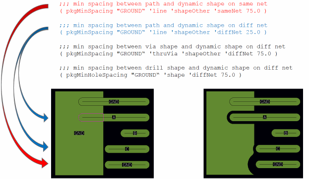
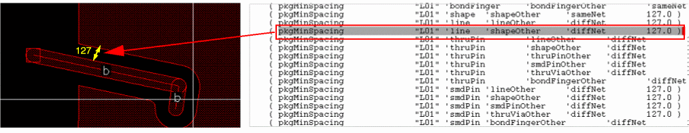
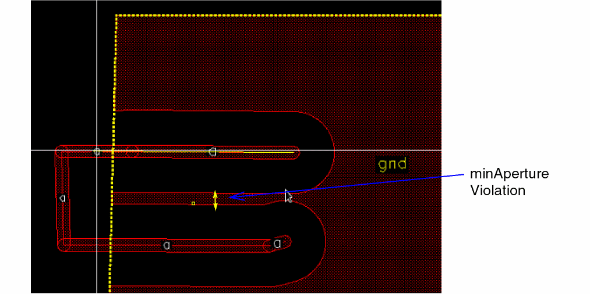
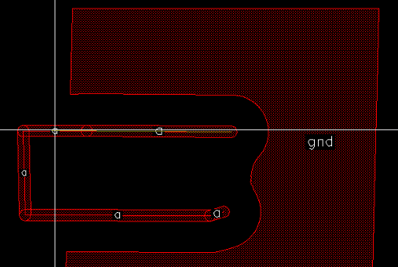
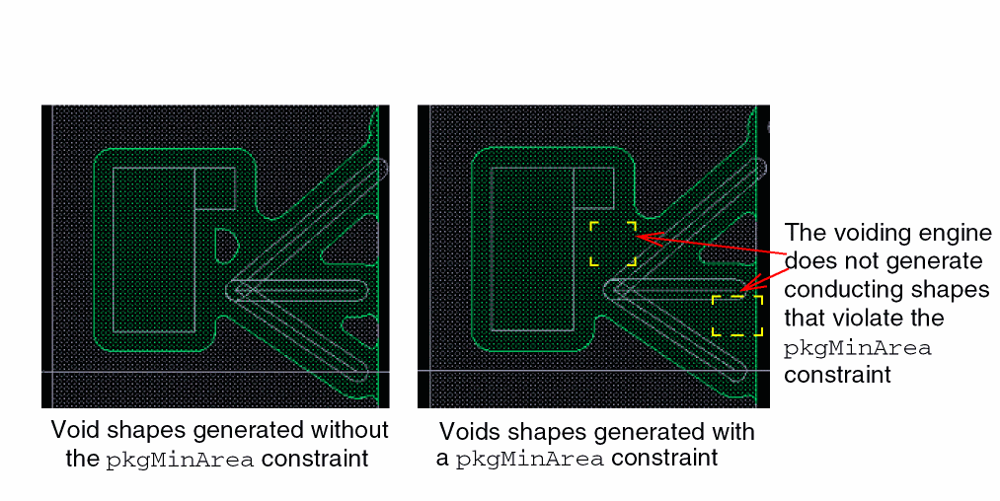

Package Constraints Supported by the Void Generator
The void generator honors the following constraints:
-
pkgMinSpacing: Specifies the minimum spacing between a signal shape and a dynamic shape. Therefore, this value indicates the width of voids. The
pkgMinSpacingvalues are defined in the technology file. The values differ for different types of signal object and nets:
 -
pkgMinAperture: Specifies the minimum width of a piece of metal. Such pieces can be created by voiding a dynamic shape.
If a part of conducting shape is too narrow, the void generator removes it so that there is no violation of theminApertureconstraint, as shown in the following image:
 -
pkgMinArea: Specifies the square root of the minimum area of a metal shape. This constraint applies to the conducting shapes resulting from voiding dynamic shapes. The void generator generates void shapes so that there is no violation of the
pkgMinAreaconstraint. ThepkgMinAreais applicable to individual layers. To apply the constraint to all layers, usepkgMinAreaDefault.

Related Topic
Convert Selected Dynamic Shapes
Return to top